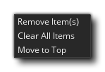
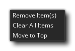

可以从 窗口 菜单打开 “最近窗口” 列表，并显示先前打开的窗口的短列表（默认情况下，它最多包含 10 个项目）。首先，此列表将为空白，但是当你在 IDE 中打开不同的窗口（如精灵、脚本或物体等等）时，将填充列表。如果你需要返回以前打开的任何窗口，只需在列表中的项目上双击鼠标左键 ，工作区将平移到窗口。如果在项目上单击鼠标右键
，工作区将平移到窗口。如果在项目上单击鼠标右键 ，则将打开以下菜单：
，则将打开以下菜单：
在这里，你可以选择从列表中删除项目（你可以使用  +
+  或
或  +
+  来选择多个项目），也可以将它们移动到列表顶部。鼠标右键菜单还有一个附加选项，允许你完全清除列表。值得注意的是，最近窗口列表可以停靠在 IDE 的两侧，你还可以调整某些 首选项 以更改其行为方式。
来选择多个项目），也可以将它们移动到列表顶部。鼠标右键菜单还有一个附加选项，允许你完全清除列表。值得注意的是，最近窗口列表可以停靠在 IDE 的两侧，你还可以调整某些 首选项 以更改其行为方式。